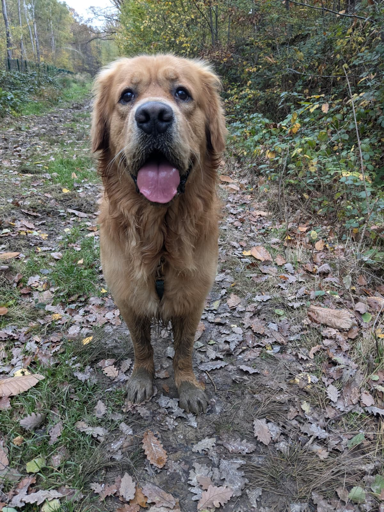

Oak
Garde longue durée (15 jours) : Oak a passé de super vacances. Nouvelles et vidéos régulières, organisation au top, et un compte-rendu très utile après la garde. Recommandé sans hésiter.
Avis
Retours d’expérience sur l’éducation, les balades et la garde (Paris 75, 94, 77, 93).
Oak
Garde longue durée (15 jours) : Oak a passé de super vacances. Nouvelles et vidéos régulières, organisation au top, et un compte-rendu très utile après la garde. Recommandé sans hésiter.
Polka
Élodie est une éducatrice hors pair : très à l’écoute, attentive, avec de très bonnes connaissances sur le comportement des chiens. Elle garde aussi notre chienne Polka ponctuellement. Bref le bonheur pour Polka et pour ses maîtres. Je recommande vivement.
Roxie
Ça fait environ deux ans que je fais appel aux services d’Élodie. Je confie Roxie les yeux fermés pour une balade en groupe. Cette double casquette permet un rapport détaillé des comportements. Groupes de taille raisonnable. Je recommande !

Ida
We couldn't ask for a better support in Elodie. She is a training expert who has helped us improve our dog's behaviour. We feel very confident sending Ida with her for walks. Ida absolutely adores her!
Jin
Notre chienne Jin bénéficie de promenades collectives avec Élodie depuis plus de deux ans. Élodie est très attentive au bien-être de Jin. Nous recommandons chaleureusement pour la garde ou la balade.